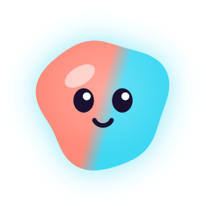
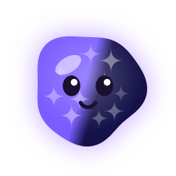
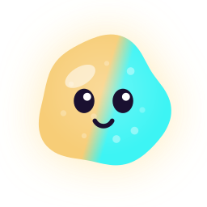
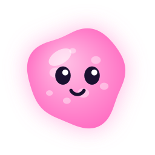
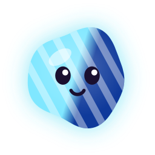
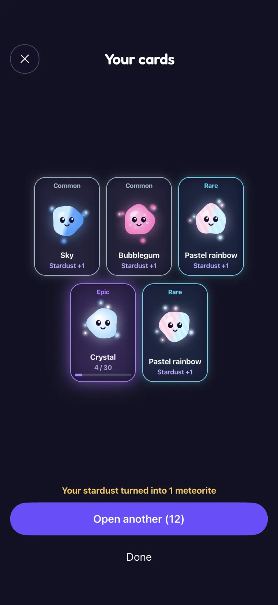

Press and creators
Press kit
Everything you need to write about or make a video of MUTA: fact sheet, description, icon, art and screenshots.
Fact sheet
- Title
- MUTA
- Tagline
- Spin. Catch. Mutate.
- Developer
- Luis Angel Caballero Jardón (independent)
- Based in
- Metepec, State of Mexico, Mexico
- Platforms
- iPhone (iOS 15.0 or later) and Android (7.0 or later)
- Genre
- Arcade · Casual · single player
- Business model
- Free with ads; optional in-app purchases (meteorite packs and "Remove ads")
- Languages
- 16: English, Spanish, Portuguese, French, German, Italian, Russian, Polish, Turkish, Indonesian, Vietnamese, Thai, Japanese, Korean, Simplified and Traditional Chinese
- Stores
- App Store · Google Play
- Contact
- soporte.mutagame@outlook.com
About the game
MUTA is a one-finger arcade game. Drag to spin a paddle around your bacteria, catch the creatures before they reach the center and dodge the spiky purple viruses. Fill three slots with three of a kind, or three different creatures, and you mutate: a power for 6 seconds (wide gel, slow motion, magnet or rainbow ×2).
In Story you have 5 lives and endless levels: new enemies, 6 worlds that change every five levels and a boss every ten. In Time Attack you have 30 seconds; capsules add time and viruses take it away.
Your bacteria is all yours: name it, choose one of 20 animated skins and an accessory (crown, antennae, glasses or party hat). Seven skins are earned on the Road, which rewards XP up to 99,999; twelve come from meteorites, each with 5 cards and odds shown in the Shop. Records go to Game Center and Google Play Games, and you can share an image of your bacteria with your records.
Key points
- One finger: spin, catch, mutate.
- Two modes: Story (5 lives, endless levels, a boss every 10) and Time Attack (30 s).
- 20 skins drawn live, not images: every bacteria wobbles, glows and sparkles.
- Meteorites with visible odds and a free one every day.
- No account, 16 languages.
- Made with Flutter and Flame by an independent Mexican developer.
Icon and art


The 20 skins
Vector (SVG) versions drawn from the game's own rendering code.















Screenshots





Using these materials
You're free to use these materials for reviews, articles, videos and streams about MUTA. Please don't alter the logo in a way that changes its meaning or suggest a sponsorship that doesn't exist. If you need something that isn't here, write to soporte.mutagame@outlook.com.